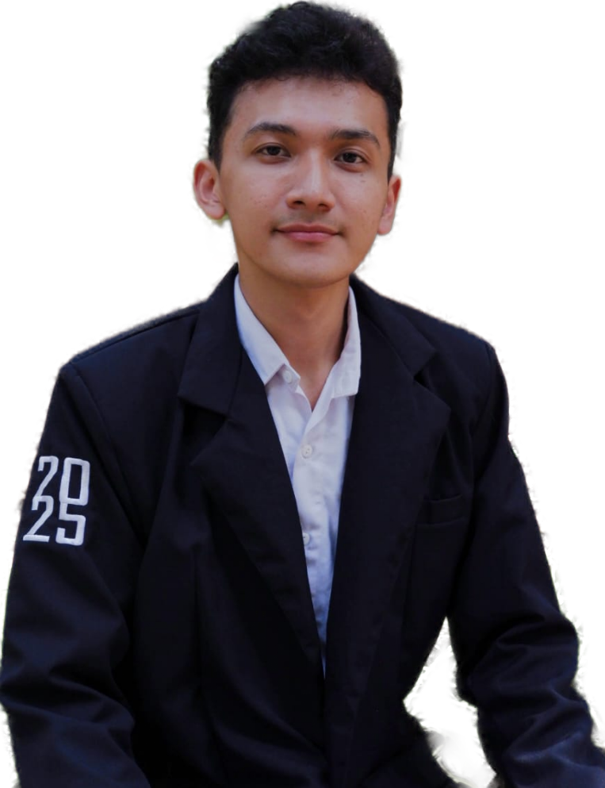

My leadership journey has been shaped by public accountability, team development, and process discipline. From leading legislative oversight in the faculty student council to mentoring laboratory assistants and managing organizational administration, each role strengthened my ability to align people, systems, and outcomes.
